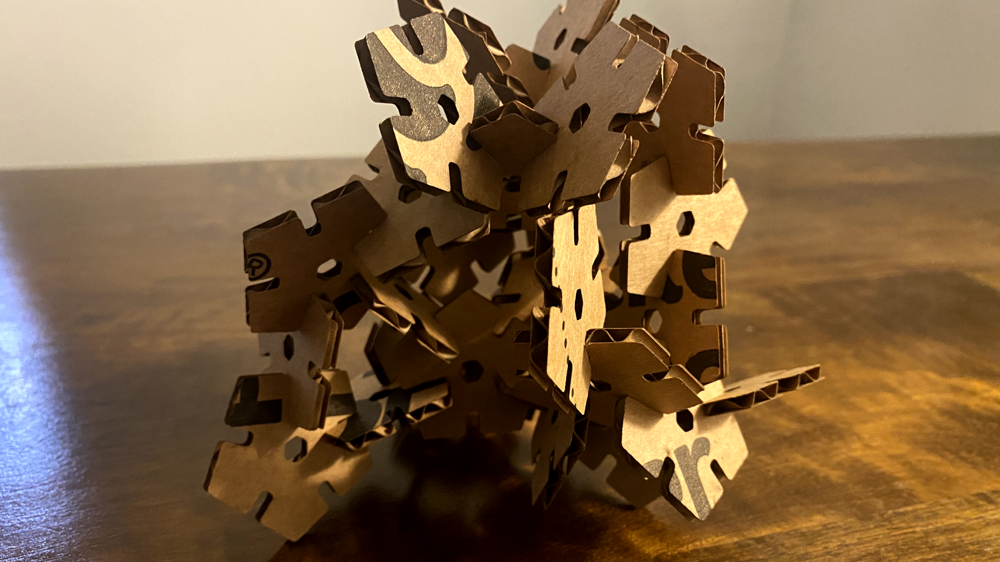

A2: Parametric Modelling with Grasshopper
I used the "Grasshopper" command in Rhino to open Grasshopper. I created a point in Rhino. With the point selected, I then used the "Point" component in Grasshopper to set the point.

I created a polygon in Grasshopper and attached it to the set point. I used the "Number Slider" component to set the values of the polygon. Just to make it a little more interesting, I created a smaller polygon to cut out of the main polygon.

In order to isolate the side of the polygon to eventually find its midpoint, I deconstructed the polygon into parts using “Deconstruct Prep.”

To center the cuts I wanted to make on each edge of the shape, I used "Curve Middle" to find the midpoint of each edge segment. The "Scale" component then sets the width of the cut at each edge. The scale factor is the desired width of the cut (an adjustable input) divided by the length of the polygon edge.
I set the appropriate angle of the cut using "Vector 2Pt" (the direction that results from connecting the centerpoint of the polygon with the midpoint of the polygon's edge). I set the "Boolean Toggle" to True and unitized the geometry so that the depth of the cut was 1. I then used the "Amplitude" component to adjust the length of the direction. In order to trim out the cut, I set the value of the amplitude to 1 unit more (using the "Addition" component) than my desired depth for the cut.
I use the "Extrude" component to extrude the cut toward the set length of the direction.

The "Move" component actually moves the cut 1 unit outside the bounds of the polygon to enable trimming.
I first trimmed the smaller polygon from the main polygon using "Trim with Regions."
I then trimmed the cuts from the geometry using a second round of "Trim with Regions."Join Curves" creates one unit out of the trimmed parts.
In order to create 30 parts of the shape to fulfill the requirements of the assignment, I used "Rectangular Array" component. Since "cell" is the amount of distance your shape takes up, I created a large enough bounding box using the "Rectangle" component and passed the shape through it.
After the pieces were created, I “baked” them into Rhino.
I used the laser cutter at the 8 this time. Exported an AI file from Rhino and set the correct scale on export: 1.00mm = 0.0394in. I opend the file in Illustrator, adjusted the stroke weight to .01pt and set the canvas size to the size of my cardboard. I changed the stroke color to red, chose "natural" and "mat board" in material settings, set the thickness of the board, and pressed print.
The pieces fit!

Source files:
Download my Rhino file! Download my AI file! Download my grasshopper definition!
Big thanks to our TA Junchao for the incredibly thorough and helpful Grasshopper tutorial. Huge thanks to Sara Cagle for reminding me about "Rectangular Array" and when to "Bake." Shout out to Tomomi Matsuzaki and Ji Su Park for helping me export my file correctly and adjust settings correctly for laser cutting. So glad I ran into both of you at the Mill.